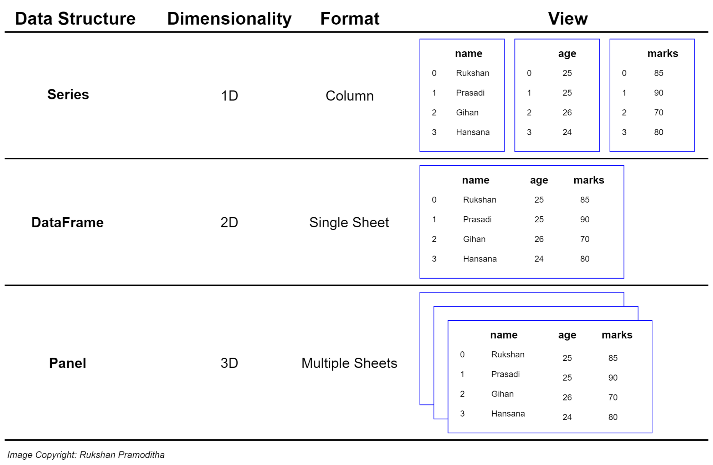

Pandas
A Pandas egy Python adatkezelő csomag, amely a korábban megismert NumPy csomagra épül.
Telepítés:
pip install pandas
vagy
conda install pandas
Szerencsére erre nem lesz szükségünk mivel az Anaconda kiterjesztés már tartalmazza. Az aktuális telepítés verziószáma lekérdezhető a Python-on keresztül.
import pandas as pd
print(pd.__version__)
1.3.3
A Pandas weboldalán számos hasznos leírás érhető el, de érdemes megnézni a beépített dokumentációt is (pd?).
Adatstruktúrák
A Pandas két általunk is sokat használt adatstuktúrája a dataframe (adattábla) és a series (adatsor).

Érdemes lekérdezni mindkettő dokumentációját (
pd.DataFrame,pd.Series)
Adatsor
A pandas adatsort (Series) egydimenziós adatstruktúrák tárolására találták ki, de belőlük épülnek fel a komplexebb adatstruktúrák is.

A létrehozásuk hagyományos Python listákból kiindulva történik.
import pandas as pd
egy_lista = ['alma', 'körte', 'citrom']
ds = pd.Series(egy_lista)
print(f"Lista:\n{ds}\n")
print(f"Indexek(kulcsok):\n{ds.index}\n")
print(f"Értékek:\n{ds.values}\n")
Lista:
0 alma
1 körte
2 citrom
dtype: object
Indexek(kulcsok):
RangeIndex(start=0, stop=3, step=1)
Értékek:
['alma' 'körte' 'citrom']
A Pandas index olyan mint egy háznak a címe (nem csak Series esetén). Segítségével tudunk kiválasztani adatpontokat a teljes adatbázisból vagy egy oszlopból. A soroknak és az oszlopoknak is van indexük: a sorok indexe az index, míg az oszlopok indexét az oszlop neve jelenti. Egy jó index csak eltérő értékeket tartalmaz. Ez a legtöbb esetben egy egyesével növekvő számsor, sokszor használnak idősoros indexet is, de tetszőleges értékekkel is felülírhatók.
import pandas as pd
egy_lista = ['alma', 'körte', 'citrom']
index_lista = ['x', 'y', 'z']
ds = pd.Series(egy_lista, index=index_lista)
print(f"Lista:\n{ds}\n")
print(f"Értékek lekérdezése:\n{ds[0]}\n{ds['y']}\n")
Lista:
x alma
y körte
z citrom
dtype: object
Értékek lekérdezése:
alma
körte
Adattábla
A pandas adattáblák (DataFrame) nevesített oszlopokban tárolják az adatokat.
 A struktúrából adódóan az adattáblák létrehozásához egy az egyszerű listánál komplexebb adatszerkezetre van szükség. Az adattábla bemenete egy Python szótár, amiben a megnevezések lesznek az oszlopok nevei, az értékek pedig a megfelelő oszlopok értékeit tartalmazó listák. Fontos kikötés, hogy a listák hossza nem térhet el egymástól.
A struktúrából adódóan az adattáblák létrehozásához egy az egyszerű listánál komplexebb adatszerkezetre van szükség. Az adattábla bemenete egy Python szótár, amiben a megnevezések lesznek az oszlopok nevei, az értékek pedig a megfelelő oszlopok értékeit tartalmazó listák. Fontos kikötés, hogy a listák hossza nem térhet el egymástól.
import pandas as pd
data = {
'alma': [3, 2, 0, 1],
'narancs': [0, 3, 7, 2]
}
df = pd.DataFrame(data)
print(f"Adattábla:\n{df}\n")
print(f"Indexek(kulcsok):\n{df.index}\n")
print(f"Oszlopnevek(mezők):\n{df.columns}\n")
print(f"Értékek:\n{df.values}\n")
print(f"Oszlop lekérdezése:\n{df['alma']}\n")
print(f"Értékek lekérdezése:\n{df['narancs'][2]}\n")
Adattábla:
alma narancs
0 3 0
1 2 3
2 0 7
3 1 2
Indexek(kulcsok):
RangeIndex(start=0, stop=4, step=1)
Oszlopnevek(mezők):
Index(['alma', 'narancs'], dtype='object')
Értékek:
[[3 0]
[2 3]
[0 7]
[1 2]]
Oszlop lekérdezése:
0 3
1 2
2 0
3 1
Name: alma, dtype: int64
Értékek lekérdezése:
7
```
A fenti példában látható, hogyan lehet lekérdezni az adattábla egyes értékeit. A szerkezetből talán látszik az is, hogy az adattáblákat lényegében nevesített adatsorok alkotják. Bármelyik (akár üres) adattáblához hozzáfűzhetünk egy újabb oszlopot az oszlopnév és az adatsor megadásával.
```python
import pandas as pd
df = pd.DataFrame()
df['alma'] = pd.Series([3, 2, 0, 1])
df['narancs'] = pd.Series([0, 3, 7, 2])
df.index = ['Anna', 'Béla', 'Cecil', 'Dávid']
print(df)
print('\n')
print(df['narancs'])
alma narancs
Anna 3 0
Béla 2 3
Cecil 0 7
Dávid 1 2
Anna 0
Béla 3
Cecil 7
Dávid 2
Name: narancs, dtype: int64
A példából látható az is, hogy az adattábla egy közös index-et kezel, ami minden benne szereplő adatsor indexét állítja. Egy már a standardtól eltérően indexelt adatsor felülírhatja az eredeti indexelést. Az új sima számokat tartalmazó indexet a reset_index() függvénnyel tudunk létrehozni. Ilyenkor, hacsak egy paraméterben máshogy nem rendelkezünk a régi index oszloppá válik.
import pandas as pd
df = pd.DataFrame()
df['alma'] = pd.Series([3, 2, 0, 1])
df['narancs'] = pd.Series([0, 3, 7, 2])
df.index = ['Anna', 'Béla', 'Cecil', 'Dávid']
print(df)
df = df.reset_index()
print()
print(df)
alma narancs
Anna 3 0
Béla 2 3
Cecil 0 7
Dávid 1 2
index alma narancs
0 Anna 3 0
1 Béla 2 3
2 Cecil 0 7
3 Dávid 1 2
Gyakran előfordul az is, hogy egy adattábla egy teljes sorát (adatbázis terminológiával élve: egy rekordját) akarjuk lekérdezni. Ezt a loc utasítást használva tehetjük meg. Az iloc segítségével akkor is használhatjuk az eredeti sorszám indexet, ha az felül lett írva.
import pandas as pd
df = pd.DataFrame()
df['alma'] = pd.Series([3, 2, 0, 1])
df['narancs'] = pd.Series([0, 3, 7, 2])
print(df.loc[1])
print()
df.index = ['Anna', 'Béla', 'Cecil', 'Dávid']
print(df.loc['Cecil'])
print()
print(df.iloc[1])
print()
print(df.loc['Béla':'Dávid'])
alma 2
narancs 3
Name: 1, dtype: int64
alma 0
narancs 7
Name: Cecil, dtype: int64
alma 2
narancs 3
Name: Béla, dtype: int64
alma narancs
Béla 2 3
Cecil 0 7
Dávid 1 2
Mint látható, a sorok lekérdezése során használhatók a listáknál megszokott többszörös kiválasztási lehetőségek is, de itt eltér az intervallumok végének kezelése.
Adattábla létrehozható még a NumPy több dimenziós tömbjei alapján is, de ebben az esetben a táblázatot soronként (rekordonként) és nem oszloponként kell megadnunk.
import pandas as pd
import numpy as np
egy_array = np.array([['Péter', 25, 10, 45], ['Anna', 32, 45, 39], ['Barnabás', 50, 50, 50]])
oszlopok = ['név', 'zh1', 'zh2', 'zh3']
df = pd.DataFrame(egy_array, columns=oszlopok)
print(df)
név zh1 zh2 zh3
0 Péter 25 10 45
1 Anna 32 45 39
2 Barnabás 50 50 50
Adattábla létrehozása fájlból
A pandas egyik legnagyobb előnye, hogy képes néhány egyszerű utasítással feldolgozni több különböző táblázatok kezelésére alkalmas forrásállomány tartalmát. Az eredmény minden esetben egy adattábla.
A következő példákhoz a Moodle-ben találhatók a példafájlok. A példák azt feltételezik, hogy a letölthető állományok egy programfájl mellett található source nevű mappában találhatók.
import pandas as pd
df = pd.read_csv('source/kosar.csv')
print(df)
Unnamed: 0 alma narancs
0 Anna 3 0
1 Béla 2 3
2 Cecil 0 7
3 Dávid 1 2
Az állományok gyakran tartalmaznak kulcs mezőket. A pandas a megfelelő paraméter megadásával képes ezeket kezelni.
import pandas as pd
df = pd.read_csv('source/kosar.csv', index_col=0)
print(df)
alma narancs
Anna 3 0
Béla 2 3
Cecil 0 7
Dávid 1 2
Hasonlóan működik a JSON állományok feldolgozása is. De ebben az esetben, ha van index oszlop, akkor azt az oszlop neve alapján kell meghatározni.
import pandas as pd
df = pd.read_json('source/kosar.json')
df = df.set_index('index')
print(df)
alma narancs
Anna 3 0
Béla 2 3
Cecil 0 7
Dávid 1 2
Adattábla fájlba írása
Az előző példák tartalma ugyanilyen egyszerűen ki is írható a megfelelő típusú állományokba. Így akár a fájlok konvertálása is egyszerűen megoldható.
A példákban az eredményeket egy
targetmappába írjuk, de nem ellenőrizzük, hogy létezik-e. A mappa hiányában az írás hibára fog futni.
import pandas as pd
df = pd.read_json('source/kosar.json')
df = df.set_index('index')
df.to_csv('target/uj_kosar.csv')
Természetesen a másik irány is működik.
import pandas as pd
df = pd.read_csv('source/kosar.csv', index_col=0)
df.to_json('target/uj_kosar.json')
Adattábla műveletek
A továbbiakban egy IMDB adatbázis, CSV-ben tárolt adatainak felhasználásával mutatjuk be a pandas modul műveleteit.
import pandas as pd
df = pd.read_csv('source/imdb.csv', index_col='Title')
df
Pusztán output-ra írva egy DataFrame-t egy formázott táblát kapunk eredményül. Ha nem csak egy táblázatot akarunk megjeleníteni, akkor a szokásos print helyett a display függvényt érdemes alkalmazni, melynek hatására ugyanez lesz az eredmény.
Adattábla alapműveletek
A head függvény segítségével könnyen ránézhetünk az adatszerkezetre. A tábla paraméterként átadott számú sorát adja vissza. (Argumentum hiányában az alapértelmezett érték 5.)
import pandas as pd
df = pd.read_csv('source/imdb.csv', index_col='Title')
df.head()
Ez nagy adattáblák áttekintése esetén hasznos, mert nem próbálja meg a Python feleslegesen vizualizálni az összes adatsort.
Ugyanígy működik a tail függvény, de ez az utolsó sorokat adja vissza.
import pandas as pd
df = pd.read_csv('source/imdb.csv', index_col='Title')
df.tail()
A shape tulajdonság tartalmazza a tábla dimenzióinak méretét.
Az info függvény a táblázat adatstruktúrájáról ad egy összegzést.
A describe pedig a numerikus változók különböző statisztikai mutatóit írja le.
A corr függvény a numerikus értékek egymás közötti korrelációjat mutatja meg.
import pandas as pd
df = pd.read_csv('source/imdb.csv', index_col='Title')
print('SHAPE')
print(df.shape)
print('\nINFO')
print(df.info())
print('\nDESCRIBE')
print(df.describe())
print('\nCORRELATION')
print(df.corr())
SHAPE
(1000, 11)
INFO
<class 'pandas.core.frame.DataFrame'>
Index: 1000 entries, Guardians of the Galaxy to Nine Lives
Data columns (total 11 columns):
# Column Non-Null Count Dtype
--- ------ -------------- -----
0 Rank 1000 non-null int64
1 Genre 1000 non-null object
2 Description 1000 non-null object
3 Director 1000 non-null object
4 Actors 1000 non-null object
5 Year 1000 non-null int64
6 Runtime (Minutes) 1000 non-null int64
7 Rating 1000 non-null float64
8 Votes 1000 non-null int64
9 Revenue (Millions) 987 non-null float64
10 Metascore 977 non-null float64
dtypes: float64(3), int64(4), object(4)
memory usage: 93.8+ KB
None
DESCRIBE
Rank Year Runtime (Minutes) Rating Votes \
count 1,000.00 1,000.00 1,000.00 1,000.00 1,000.00
mean 500.50 2,012.78 113.17 6.72 169,808.26
std 288.82 3.21 18.81 0.95 188,762.65
min 1.00 2,006.00 66.00 1.90 61.00
25% 250.75 2,010.00 100.00 6.20 36,309.00
50% 500.50 2,014.00 111.00 6.80 110,799.00
75% 750.25 2,016.00 123.00 7.40 239,909.75
max 1,000.00 2,016.00 191.00 9.00 1,791,916.00
Revenue (Millions) Metascore
count 987.00 977.00
mean 72.89 58.85
std 100.75 17.15
min 0.00 11.00
25% 3.40 47.00
50% 37.43 59.00
75% 100.10 72.00
max 936.63 100.00
CORRELATION
Rank Year Runtime (Minutes) Rating Votes \
Rank 1.00 -0.26 -0.22 -0.22 -0.28
Year -0.26 1.00 -0.16 -0.21 -0.41
Runtime (Minutes) -0.22 -0.16 1.00 0.39 0.41
Rating -0.22 -0.21 0.39 1.00 0.51
Votes -0.28 -0.41 0.41 0.51 1.00
Revenue (Millions) -0.26 -0.18 0.30 0.25 0.67
Metascore -0.17 -0.09 0.21 0.61 0.33
Revenue (Millions) Metascore
Rank -0.26 -0.17
Year -0.18 -0.09
Runtime (Minutes) 0.30 0.21
Rating 0.25 0.61
Votes 0.67 0.33
Revenue (Millions) 1.00 0.16
Metascore 0.16 1.00
Lehetőség van továbbá arra, hogy egyszerűen eltávolítsuk a felesleges, ismétlődő sorokat.
import pandas as pd
df = pd.read_csv('source/imdb.csv', index_col='Title')
teszt_df = df.drop_duplicates()
teszt_df.shape
(1000, 11)
Adattábla paraméteres függvényei
Az előző példában nem történt semmi mert nem voltak egyező sorok. A továbbiakban lemásoljuk az adattáblánkat a copy függvény segítségével. Ezen túl a drop_duplicates függvény lehetővé teszi különböző paraméterek használatát. Ezen függvény esetében ilyen:
subset, amely azt jelenti, hogy csak egy bizonyos oszlopra vonatkozik a duplikáció kereséskeep, amellyel specifikálni lehet, hogy melyik értéket tartsa meginplace, amely nagyon sok függvényben elérhető és változó deklarálás nélkül az eltárolt objektumot módosítja
import pandas as pd
df = pd.read_csv('source/imdb.csv', index_col='Title')
teszt_df = df.copy()
teszt_df.drop_duplicates(inplace=True, keep='last', subset=['Year'])
print(teszt_df.shape)
teszt_df
A sort_values függvény sorbarendezi az adattábla sorait (alapesetben az index alapján). Újdonság még a lentebbi kódban, hogy a különböző függvényeket egymásra lehet fűzni, ahol balról jobbra haladva minden függvény bemeneti változója az előző függvény eredménye.
import pandas as pd
df = pd.read_csv('source/imdb.csv', index_col='Title')
df.sort_values(by='Rating', ascending=False).head(5)
Oszlopok átnevezése és kisbetűssé tétele.
import pandas as pd
df = pd.read_csv('source/imdb.csv', index_col='Title')
df.rename(columns={'Runtime (Minutes)': 'Runtime',
'Revenue (Millions)': 'Revenue_millions'},
inplace=True)
df.columns = df.columns.str.lower()
print(df.columns)
Index(['rank', 'genre', 'description', 'director', 'actors', 'year', 'runtime',
'rating', 'votes', 'revenue_millions', 'metascore'],
dtype='object')
Oszlopok törlése
import pandas as pd
df = pd.read_csv('source/imdb.csv', index_col='Title')
print(df.columns)
df = df.drop(columns=['Rank'])
print(df.columns)
Index(['Rank', 'Genre', 'Description', 'Director', 'Actors', 'Year',
'Runtime (Minutes)', 'Rating', 'Votes', 'Revenue (Millions)',
'Metascore'],
dtype='object')
Index(['Genre', 'Description', 'Director', 'Actors', 'Year',
'Runtime (Minutes)', 'Rating', 'Votes', 'Revenue (Millions)',
'Metascore'],
dtype='object')
Üres értékek listázása
Az isnull függvény megmutatja, hogy melyik érték hiányos.
A sum függvény összeszámolja az előbbiekben kimutatott adathiányokat: a False = 0 és True = 1.
A dropna függvénnyel eldobjuk azokat a sorok, ahol üres érték van.
import pandas as pd
df = pd.read_csv('source/imdb.csv', index_col='Title')
display(df.isnull())
display(df.isnull().sum())
display(df.dropna().isnull().sum())
Oszlopok/adatsorok műveletei
A dataframe['oszlopnév'] szintaktikával tudunk kijelölni egy oszlopot. Így egy Pandas adatsort kapunk. Ezzel szemben a dataframe[['oszlopnév']] szintaktikával egy (vagy több oszlopra) szűkítjük le az adattáblát, de a formátuma adattábla marad.
import pandas as pd
df = pd.read_csv('source/imdb.csv', index_col='Title')
display(df['Rating'])
display(df[['Rating']])
A unique függvény kilistázza a adott oszlop értékkészletét.
A max és min függvény a legnagyobb és a legkisebb értéket mutatja meg.
Az idxmax és idxmin függvény pedig az ezen értékekhez tartozó indexet mutatja meg.
A sum, median, mean és stb. függvények értelemszerűen listázzák a megfelelő értéket
A quantile függvény a q paraméternél megadott százalékos kvantilist mutatja meg. Pl. q=.2 -> 20%
import pandas as pd
df = pd.read_csv('source/imdb.csv', index_col='Title')
print(df['Rating'].unique())
print(df['Rating'].max())
print(df['Rating'].min())
print(df['Rating'].idxmax())
print(df['Rating'].idxmin())
print(df['Revenue (Millions)'].sum())
print(df['Year'].median())
print(df['Year'].mean())
print(df['Year'].quantile(q=.2))
[8.1 7. 7.3 7.2 6.2 6.1 8.3 6.4 7.1 7.5 7.8 7.9 7.7 6.6 8.2 6.7 8. 6.5
5.3 6.8 4.7 5.9 6.3 5.6 8.6 7.6 6.9 2.7 3.7 5.8 9. 7.4 4.1 8.5 8.8 5.4
6. 5.7 8.4 5.2 5.5 4.8 3.9 4.9 5.1 5. 4.3 4.6 4.2 4. 3.2 4.5 1.9 3.5
4.4]
9.0
1.9
The Dark Knight
Disaster Movie
71938.31999999999
2014.0
2012.783
2009.8
Az alábbi kód a bevétel átlagát helyettesíti be a fillna függvény segítségével a hiányzó értékek helyett.
import pandas as pd
df = pd.read_csv('source/imdb.csv', index_col='Title')
bevetel = df['Revenue (Millions)']
bevetel_atlag = bevetel.mean()
print(bevetel_atlag)
bevetel.fillna(bevetel_atlag, inplace=True)
display(bevetel)
72.88583586626139
Title
Guardians of the Galaxy 333.13
Prometheus 126.46
Split 138.12
Sing 270.32
Suicide Squad 325.02
...
Secret in Their Eyes 0.00
Hostel: Part II 17.54
Step Up 2: The Streets 58.01
Search Party 0.00
Nine Lives 19.64
Name: Revenue (Millions), Length: 1000, dtype: float64
Míg a korábbi függvények csak numerikus oszlopokra vonatkoztak, addig a value_counts bármilyen oszlop esetében listázza leggyakoribb értékeket.
import pandas as pd
df = pd.read_csv('source/imdb.csv', index_col='Title')
display(df['Genre'].value_counts().head(3))
Action,Adventure,Sci-Fi 50
Drama 48
Comedy,Drama,Romance 35
Name: Genre, dtype: int64
Oszlopokkal különböző műveleteket lehet végezni. Itt pl. kiszámoljuk, hogy mennyi bevétel jutott a filmek egy percére. De numerikus oszlopokhoz hasonlóan a szöveges oszlopokat is lehet kombinálni.
import pandas as pd
df = pd.read_csv('source/imdb.csv', index_col='Title')
display(df['Revenue (Millions)'] / df['Runtime (Minutes)'])
Title
Guardians of the Galaxy 2.75
Prometheus 1.02
Split 1.18
Sing 2.50
Suicide Squad 2.64
...
Secret in Their Eyes 0.00
Hostel: Part II 0.19
Step Up 2: The Streets 0.59
Search Party 0.00
Nine Lives 0.23
Length: 1000, dtype: float64
Értékek kiválasztása feltételekkel
Bizonyos feltételek/kondiciók alapján leszűrhetjük az adatunkat. A feltétel a háttérben minden adatra megnézi, hogy igaz, vagy hamis az állítás. A loc tulajdonsággal kombinálva pedig leszűrhetjük az adattáblát.
import pandas as pd
df = pd.read_csv('source/imdb.csv', index_col='Title')
kondicio = (df['Director'] == 'James Gunn')
display(kondicio.head())
display(df.loc[kondicio])
Title
Guardians of the Galaxy True
Prometheus False
Split False
Sing False
Suicide Squad False
Name: Director, dtype: bool
A feltétel lehet numerikus és kisebb/nagyobb is, de összefűzhetünk több feltételt a VAGY (|) és ÉS (&) operátorokkal, valamint megfelelő zárójelezéssel. A df['oszlopnév'].isin(egy_lista) függvényével szűrhetünk azokra az értékekre, amelyek szerepelnek az egy_lista-ban. Alább egy többszörösen összetett feltételrendszert látni. A formázás segít megmutatni, hogy melyik zárójel hova tartozik.
import pandas as pd
df = pd.read_csv('source/imdb.csv', index_col='Title')
df.loc[((df['Year'] >= 2010) &
(df['Year'] <= 2015)) &
(df['Rating'] > 8.0) &
(df['Revenue (Millions)'] < df['Revenue (Millions)'].quantile(0.25))]
Feladatok
- Olvasd be a szeged.csv fájlt. Nézd meg az első pár sorát, a teljes adatbázis méretét, írasd ki a leíró statisztikákat és a korrelációt az oszlopok között.
- Töröld a "Loud Cover" és "Daily Summary" oszlopokat. Nevezd át a maradék oszlopokat úgy, hogy mindegyik kisbetűs és _-al legyenek elválasztva szavak
- Nézd meg melyik napon volt a legnagyobb a láthatóság? Mi volt az átlagos páratartalom? Melyik nap volt a legnagyobb különbség a hőmérséklet és a hőérzet között?
- Hány olyan sor van ahol hó esett, a leírás alapján ködös idő volt és vagy 0 és 20 méter között volt a láthatóság vagy 3.2 km felett volt a láthatóság, de a páratartalom 0.9 alatt volt?